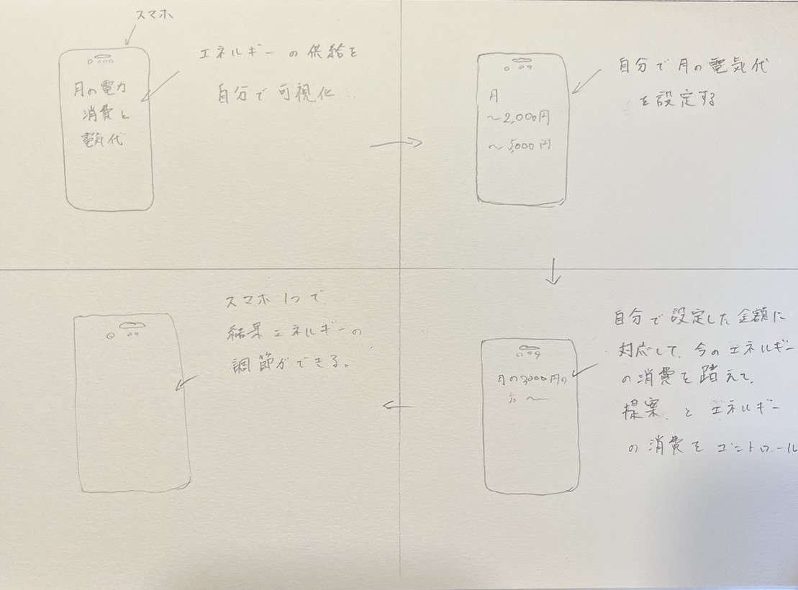

IoTとは、Internet of Things（モノのインターネット）の略称です。
IoTとは、ネットワークに接続されたデバイス（センサーやアクチュエーター）などを使って、様々な情報を収集・解析し、制御や遠隔操作を行う技術やシステムを指します。
IoTでは、センサーなどのデバイスが収集した情報をインターネットを通じてクラウド上に送信し、クラウド上でデータを処理し、データ解析や機械学習による予測、制御指令を発行することで、さまざまな情報を活用します。
例えば、家庭用家電製品や車のセンサー、工場の生産ラインなどで、IoT技術が活用されることがあります。
IoTは、様々な分野で活用され、効率化や省エネルギー、安全性の向上など、多くのメリットが期待されています。
また、5Gのような高速通信技術の普及や、人工知能技術との連携など、IoTの発展によって新しいビジネスモデルや社会システムの変化が予想されています。
2,Iotで何ができそうか？班の意見
グループ内の意見

Iotについてはなんとなく理解できたのですが、なにができそうなのかが曖昧でした。
色々な案が出ましたがドラえもんやコナン、ポケモンなどアニメや映画からのネタが多くありました。
3,Iotで何が出来そうか？個人の意見

Iotがセンサーなどを通じて制御などの調整ができるということから、スマホ１台で自宅の電気代を調整できないかと思い考えてみました。
クレジットカードのように自分が使いすぎを防止する機能をこの電気代の調整に活かせたら、普段気づかない電気代の調整が可能になると思います。
また、もし一人暮らしだったらこんなのがあったらいいなと思いました。